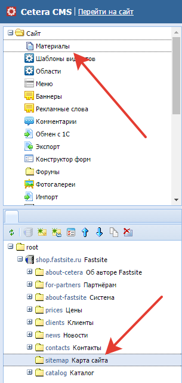
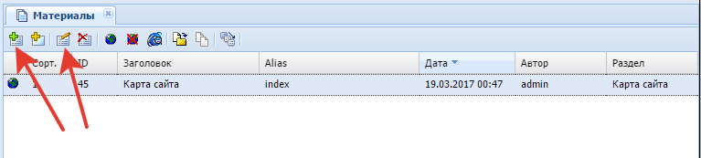
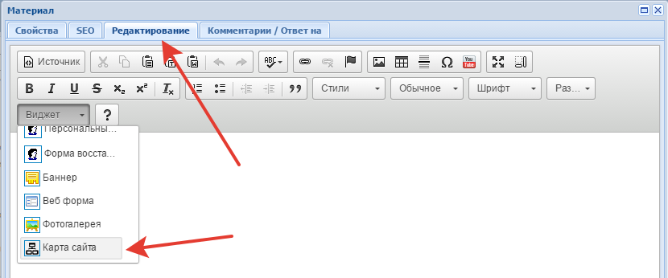
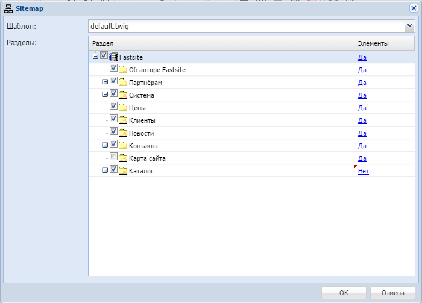
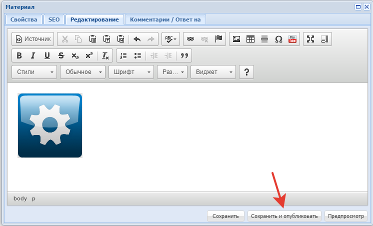
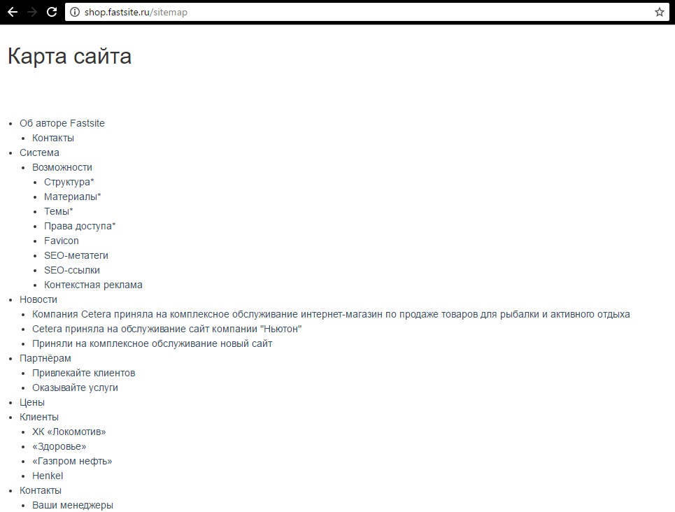

Переходим к материалам раздела, в котором необходимо отобразить карту сайта.

Выбираем имеющийся материал или создаем новый.

Переходим на вкладку «Редактирование» и в выпадающем списке «Виджеты» выбираем «Карта сайта».

Попадаем в окно настройки виджета.

В поле «Шаблон» выбирается шаблон для отображения карты сайта.
В поле «Разделы» показаны все разделы, привязанные к сайту. Вы можете настроить данные из каких разделов должны отображаться в карте сайта.
Столбец «Раздел» даёт возможность выбрать нужные для вывода разделы.
Столбец «Элементы» - "Да" говорит системе, что нужно выводить все элементы, входящие в данный раздел.
Сохраняем изменения и публикуем материал.

Откроем страницу с ранее добавленной картой сайта.

Готово.